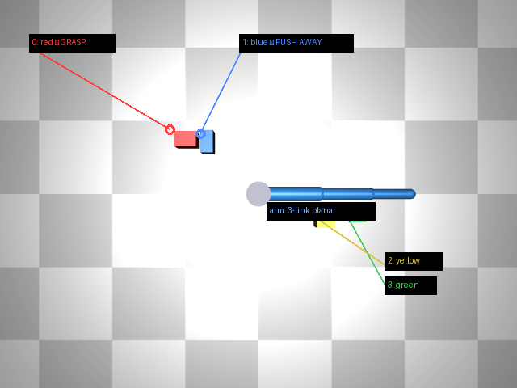
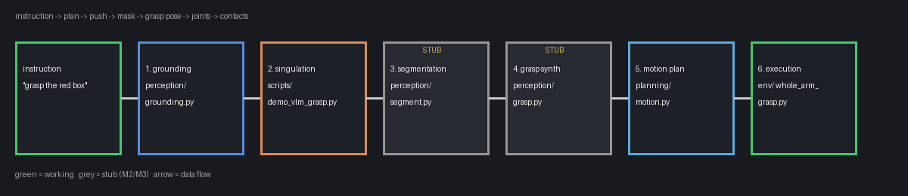
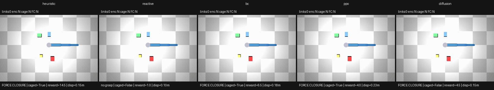
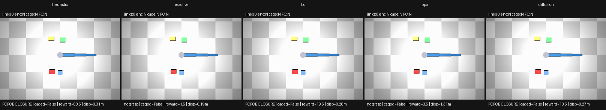
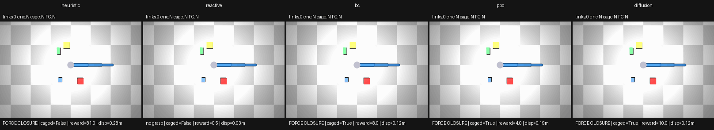

Overview
The thesis problem: a 3-DOF arm with no gripper grasps a target object whole-arm, wrapping its links around it in an enveloping grasp (caging / force closure) — modeled, as in the thesis, as a planar cross-section through the arms, with the object free to slide and yaw on the table. Here the arm is a single 3-link planar arm viewed top-down, the target is the red box, and distractor boxes add clutter: some scenes need a distractor pushed aside (singulation) before the grasp.
Thesis lineage. Anders (2014) learned enveloping-grasp policies for a PR2 (single arm, plus a mirrored dual-arm mode) in a 2D Box2D cross-section simulator: continuous states (joint angles + object x, y, θ), a 3-DOF incremental-joint action, and linear gradient-descent SARSA. This project keeps the problem shape — planar cross-section, 3-DOF arm, continuous states, force-closure goal — but swaps the 2D sim for a MuJoCo planar scene and the SARSA learner for modern counterparts (PPO, behavior cloning, diffusion policy), plus scripted and VLM-planned references. A similar setup, not a 1-1 replication: single arm only, no torso contacts, no sim-to-real. Full mapping in the thesis-alignment note.

One instruction through the plan-based pipeline
Only the heuristic/VLM planners follow this pipeline — they are the only approaches that take an instruction. The learned policies (BC, diffusion, PPO) skip all of it: they map the flat simulator state straight to joint targets, with the target box designated by its observation slot. They are target-agnostic — the identical trained weights grasped blue/green targets 9/12 with zero retraining when the target slot pointed there (PPO 3/4, BC 3/4, diffusion 3/4 on seeds 2, 4) — because they see target positions, never color or words; color-to-index grounding has to come from outside (e.g. the VLM). A truly different task (new verb/objective, not just a new target color) still needs retraining: a new reward for PPO, new demos for BC/diffusion.

- Grounding — the planner turns the instruction + scene into a semantic plan:
grasp target, ordered
push_awaylist with effort (nudge / clear / shove), approach side, rationale. The VLM never outputs raw coordinates. - Singulation — each planned push executes via the Cartesian
push()primitive (IK approach, straight-line shove). Pushed optimistically and reverted if isolation drops, the target moves more than the distractor, or anything launches. - Isolation gate — grasp starts only if target isolation ≥ 0.15 m (logged either way; the grasp is attempted as fallback regardless).
- Grasp — the executor yaws at the target (biased by approach side), reaches, and curls the links around it. If the first cage entry misses, a snapshot-and-retry second entry re-attempts it tucked from a pristine restore. Goal criterion: force closure.
Success criteria (weakest first)
- links touching (0–3)
- Shaping signal; also the camping exploit (lean on the box for 200 steps without grasping).
- force closure (FC)
- The goal. Contact wrenches span opposing directions (friction-cone test), so the grasp resists disturbance. A pinch can pass FC without surrounding the box.
- caged
- Strictest diagnostic: ≥2 links touching, target center inside the arm's joint polygon, and the loop closed. FC without caged ≈ a pinch; caged without FC ≈ surrounding but not squeezing.
Scene metrics: isolation (min center-distance target→distractor; ≥ 0.15 m = preconditions met) and target displacement (how far the target moved — high values mean shoving, not grasping).
Action and observation space
Action
Every approach emits the same thing: target joint angles
[q1, q2, q3] in radians, clipped to ±2.6, one command per env step.
Soft position actuators chase the target over 20 MuJoCo substeps.
- Learned policies (PPO/BC/diffusion) output normalized actions in
[-1, 1]³, scaled ×2.6 in the wrapper (SB3 convention). max_delta_q(1.0 for PPO) caps the per-step joint-target change — a slew-rate limit that stops random exploration from commanding 5.2 rad swings.- Link lengths 0.30 / 0.25 / 0.20 m; workspace radius ≈ 0.75 m.
Observation
Learned policies see a flat float32 vector — no images in the loop. The VLM is the only component that looks at pixels, once per episode, to plan.
| Slice | Dims | Contents |
|---|---|---|
qpos | 3 | joint angles (rad) |
qvel | 3 | joint velocities |
target_xy | 2 | target box center |
target_half | 2 | target half-extents |
| distractors | 3×2 | (dx, dy) relative to target, angle-sorted |
| contact | 2 | links_touching / 3, enclosed flag |
Distractor offsets are target-relative and angle-sorted (permutation invariance); contact features are privileged — they expose the reward signal directly.
Reward per step: 0.5 × links_touching + 2.0 × force_closure.
Episodes end on force closure, truncate at 200 steps. PPO trains with extra shaping
(−2.0/step anti-camp penalty, +20 FC bonus); eval uses the base reward so reports stay comparable.
Six approaches, two families
Plan-based (heuristic/VLM) run open-loop scripts: plan once, push, execute a fixed cage trajectory. Closed-loop (reactive/BC/diffusion/PPO) observe every step and react. Compared head to head on identical seeds.
| Approach | Family | How it works | FC (seeds 0–9) |
|---|---|---|---|
| Heuristic | plan | Regex-parsed plan (target red, no pushes, approach near), then scripted cage: park link 1 beside the target, curl links 2–3 over ~120 interpolated steps, early stop on FC + caged — plus a tucked snapshot-and-retry second entry when the first misses. Deterministic reference bar. | 10/10 |
| VLM | plan | Same executor, smarter plan: top-down render + object list + instruction → Nemotron-3.5-Super-VL on Nebius (strict JSON schema) → semantic plan, no coordinates. Calls logged + cached in episodes/vlm_ledger.jsonl. Only earns its keep through singulation. | 2/2 canary |
| Reactive | closed-loop | Proportional tip servo toward the target (5 cm/step cap, DLS IK), open-loop curl on contact. Deliberate floor: anything that can't beat it is broken. | 0/10 |
| BC | closed-loop | 3-layer MLP, obs → action, plain MSE on 130 scripted-cage FC demos. One forward pass per step, no memory, no chunking. Cloned the script and trails it (7/10 vs 10/10). | 7/10 |
| Diffusion | closed-loop | State-based Diffusion Policy: FiLM UNet-1D denoiser predicts 16-action chunks conditioned on obs; DDIM sampling (20 steps), execute 8, replan. Gentlest of the grasping policies. | 5/10 |
| PPO | closed-loop | SB3 PPO from scratch, 500k steps, zero demos — shaped reward only (contact payments − time penalty + FC bonus). Trails the bar (7/10 vs 10/10) and shoves boxes (reward doesn't punish displacement). | 7/10 |
Data flow
scripted_cage ──demonstrates──▶ demos_cage_fc (130 FC episodes)
│ │
│ mined by ├──▶ BC (MSE, 1 step)
▼ └──▶ Diffusion (chunks)
heuristic/VLM PPO ◀── reward only, no demos
executor reactive ◀── no learning at all
The honesty constraint on cloning: BC/diffusion cannot exceed their demonstrator. They train on scripted-cage trajectories, so their ceiling is "the cage, generalized to new scenes." PPO is the only approach that can discover anything the scripts can't do (and the only one that needed 500k steps to trail them, 7/10 to 10/10).
Benchmark results (seeds 0–9)
Benchmark instruction (grasp the red box in isolation) goes to the plan-based
planners; the learned policies get the same scenes with the target designated by observation slot
(no words). Headline metric is force-closure rate.
Source: episodes/compare-0-9.json
(full per-seed breakdown in the generated compare report, linked below).
| Planner | FC rate | Caged | Mean steps | Mean reward | Isolation Δ | Target disp |
|---|---|---|---|---|---|---|
| Heuristic | 1.00 | 0.80 | 174 | 28.6 | +0.000 m | 0.192 m |
| BC | 0.70 | 0.30 | 122 | 13.2 | −0.101 m | 0.175 m |
| PPO | 0.70 | 0.60 | 64 | 3.7 | +0.264 m | 0.650 m |
| Diffusion | 0.50 | 0.10 | 166 | 8.8 | −0.059 m | 0.155 m |
| Reactive | 0.00 | 0.00 | 44 | 0.8 | +0.017 m | 0.081 m |
- Preconditions rate 1.00 for all (property of the seeds, not the planners); singulation rate 0.00 everywhere — no push has produced a kept isolation gain on these seeds yet.
- Reward is not comparable across planners (learned ones accumulate contact payments differently); steps roughly is.
- Seed 0 now falls only to the retried heuristic; seeds 2/5/7 fall to all four capable ones.
- VLM canary (seeds 2, 4): 2/2 at $0 via ledger cache. VLM singulation never executes yet on these seeds — planned pushes prove kinematically unreachable and get reverted/skipped, so VLM ≈ heuristic wherever the cage alone decides. Strict VLM win on the adjacent preset: 1/1 vs heuristic 0/1 (kept shear unlocks the cage).
- Seed-4 cage used to bulldoze from every side (target knocked 0.59 m, zero contacts) while BC grasped the same scene — diagnosed as the opening yaw dominoing blue into red; the tucked snapshot-and-retry second entry now grasps it (retry success story in the demos below).
Demos
Multi-panel GIFs from the compare harness: heuristic / reactive / BC / PPO / diffusion
on the same seed, with a live status line per panel
(links:N enc:Y/N cage:Y/N FC:Y/N).



Docs and full reports
- Project README — setup, quickstart, training commands, container details
- Approaches, action space, and how the pieces fit — the learning-oriented guide this page summarizes
- Thesis alignment — Anders (2014) vs grasping-2026, what's in and out of scope
- Experiment harness — compare loop, training notes, canary protocol
- VLM grounding tutorial — prompt, plan parsing, failure modes
- Full per-seed compare report (HTML) — generated, all seeds × planners with GIFs (available in a local checkout)
Numbers on this page: episodes/compare-0-9.json via
scripts/compare_planners.py --seeds 0-9. GIFs: same harness with --gifs.
Re-run the harness and refresh site/assets/ to update.